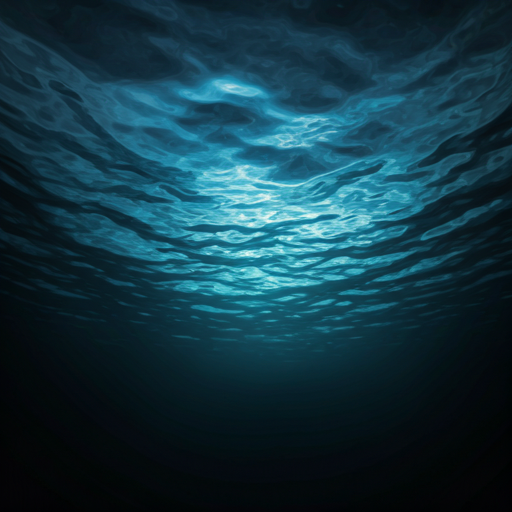
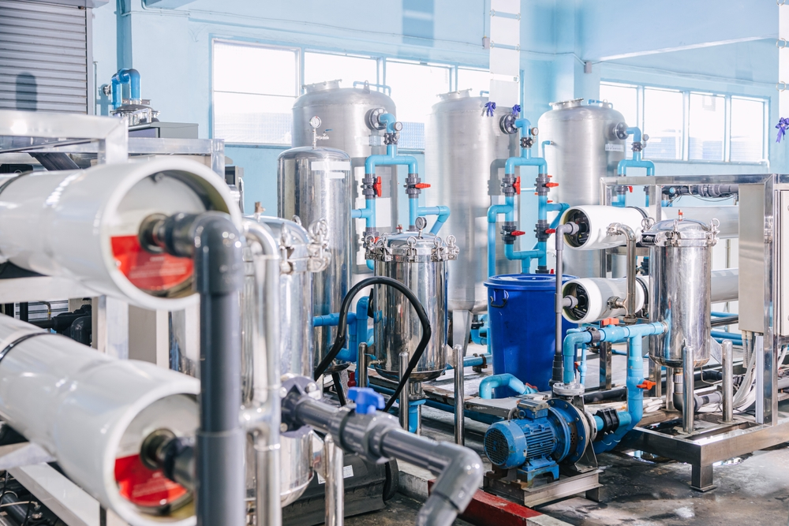
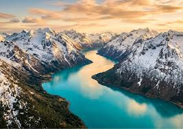
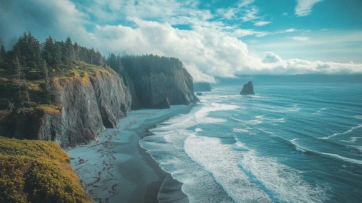
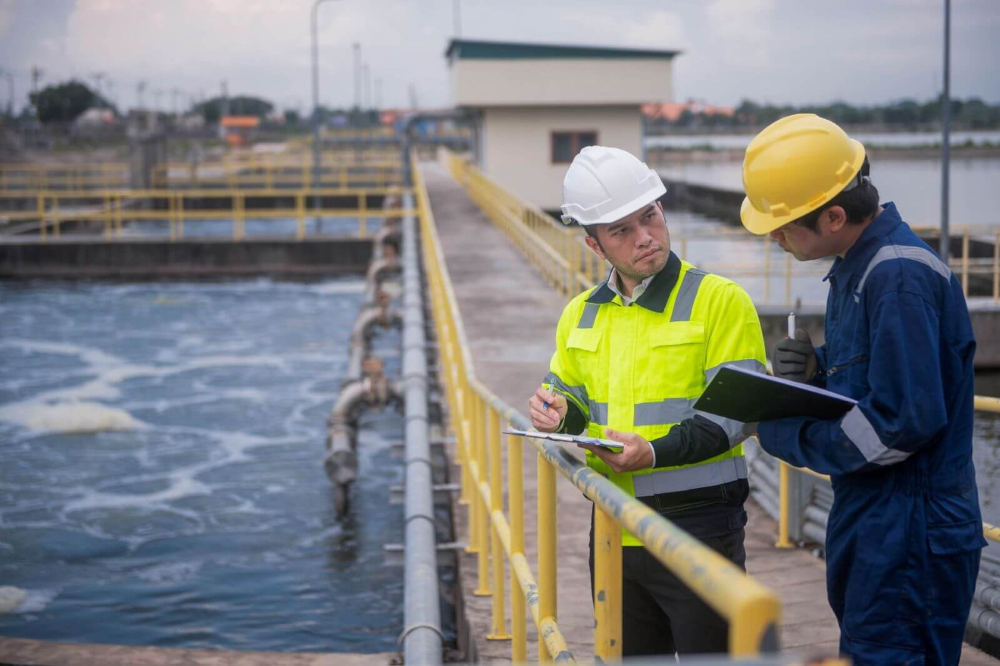

The Fluid Archive.
Documenting the global impact of SDG 6 through the lens of research, sanitation, and the raw power of water.






Documenting the global impact of SDG 6 through the lens of research, sanitation, and the raw power of water.



